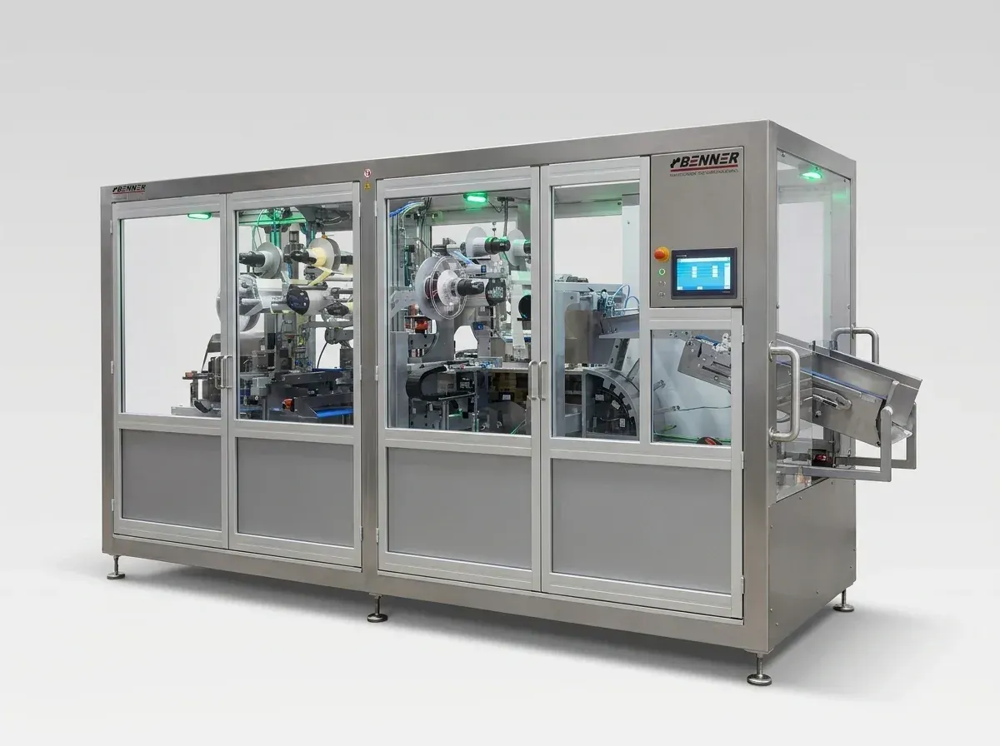
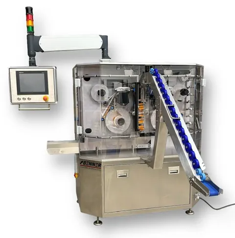

M-KOPF · bis Lieferung Werksfoto (freigestellt)Multipacks mit Etikett statt Folie
Multiformat-MultipackmaschineViele Formate, Formatwechsel in max. 30 Minuten
Die Multipackmaschine für verschiedene Formate: Stehbeutel in wechselnden Formaten und Gebindegrößen laufen über eine Anlage. Für das nächste Format wählt der Bediener am Panel ein anderes Rezept.
Antwort binnen 1 Arbeitstag · 07244 9476‑400
Wenn das zweite Format kommt
Der Handel will das 2er im Flachbeutel. Dann das 3er im Stehbeutel. Dann die Aktionspackung.
Andere Beutel, andere Bündel: umbauen, von Hand packen oder eine zweite Maschine? Oft stehen dann Leute am Packtisch, Schicht für Schicht, bis die Aktion vorbei ist.
Der andere Weg: Die Formate laufen nacheinander über dieselbe Anlage. Gewechselt wird per Rezept am Bedienpanel, in höchstens 30 Minuten. Eine Anlage, eine Bedienung.
Ablauf
Bündeln, etikettieren, Format wechseln
- M-GALERIE-2Station Bündeln: Stehbeutel werden zum Bündel gestellt.
01Bündeln
Die Stehbeutel laufen ein, werden gezählt und zum Bündel gestellt.
- M-GALERIE-3Station Etikettieren.
02Etikettieren
Ein perforiertes Etikett verbindet die Beutel. Im Regal trennt der Kunde einzelne Packungen ab.
- M-FORMATWECHSELRezept wählen, Anschlag fährt, nächstes Bündel läuft.
03Format wechseln
Für das nächste Format wählt der Bediener am Panel ein anderes Rezept. Die Maschine stellt sich auf das neue Bündel ein, in höchstens 30 Minuten.
Formatwechsel per Rezept
Ein Rezept je Format, eine Anlage für alle.
Jedes Format hat sein Rezept. Der Bediener wählt es am Panel, die Maschine stellt sich auf das neue Bündel ein. Der Wechsel dauert höchstens 30 Minuten.
Aktiv: Rezept 3, 4er-Bündel
Darstellung schematisch, mit Beispielformaten.
Daten
Technische Daten
Die Multiformat-Multipackmaschine legen wir als Projekt auf Ihre Formate aus. Die Tabelle nennt, was für alle Projekte gilt.
| Produkte | Stehbeutel in verschiedenen Formaten und Gebindegrößen |
|---|---|
| Formatwechsel | per Rezept am Bedienpanel, höchstens 30 Minuten |
| Leistung | bis zu 80 pro Minute, je nach Format F-MF-EINHEIT · Beutel oder Bündel? |
| Formatbereich | F-MF-FORMATE · Beutelmaße, Bündelgrößen, Zahl der Formate |
| Stellfläche | F-MF-FLAECHE · Stellfläche mit Etikettierern |
| Etikett | perforiertes Etikett, einzelne Packungen abtrennbar |
| Bauweise | Edelstahlgehäuse mit Glastüren, Touchpanel, Auslaufrutsche |
| Lieferzeit | F-LIEFERZEIT · typische Lieferzeit |
Verbindlich im Angebot: Leistung für Ihre Formate, Preisrahmen, Lieferzeit, Gewährleistung und Anschlusswerte.
Galerie
Die Maschine aus der Nähe
Projekt
So läuft ein Multiformat-Projekt
F-MF-PROJEKTE · Stand der Projekte, was wir dazu sagen dürfen- 1 Formatliste schicken: Beutelmaße, Bündelgrößen und Stückzahlen je Format.
- 2 Passung prüfen: Wir prüfen, ob Ihre Formate zu dieser Bauart passen, und legen die Maschine darauf aus.
- 3 Konzept und Angebot mit Preisrahmen.
- 4 Bau und Abnahme in Stutensee, Inbetriebnahme und Schulung bei Ihnen.
Fragen und Antworten
Fragen zur Multiformat-Multipackmaschine
Wie lange dauert ein Formatwechsel?
Höchstens 30 Minuten. Der Bediener wählt am Panel das Rezept des neuen Formats, die Maschine stellt sich auf das neue Bündel ein.
Wie viele Formate kann die Maschine fahren?
F-MF-FORMATE · Zahl der Formate, Formatbereich Schicken Sie uns Ihre Formatliste, wir melden uns binnen 1 Arbeitstag und prüfen, ob Ihre Formate passen.
Welche Leistung schafft die Maschine?
Bis zu 80 pro Minute, je nach Format. F-MF-EINHEIT · Beutel oder Bündel?
Wie viel Platz braucht die Maschine?
F-MF-FLAECHE · Stellfläche
Wann lohnt sich Multiformat statt eines festen Formats?
Wenn Sie Stehbeutel in mehreren Formaten fahren oder das Format oft wechseln. Zwei Formate heißen nicht automatisch Multiformat: Entscheidend ist, wie oft und wie schnell Sie wechseln müssen. Wir rechnen beide Wege an Ihrer Formatliste durch.
Wie läuft ein Multiformat-Projekt ab?
Sie schicken uns Ihre Formatliste mit Beutelmaßen, Bündelgrößen und Stückzahlen. Wir prüfen, ob die Formate zu dieser Bauart passen, legen die Maschine darauf aus und schicken Ihnen Konzept und Angebot mit Preisrahmen. Gebaut und abgenommen wird in Stutensee, in Betrieb genommen bei Ihnen.

Nicht Ihr Fall?
Sie bündeln liegende Beutel oder Flowpacks, und das Format bleibt gleich? Dann passt die Multipackmaschine für ein festes Format: bis 30 Multipacks pro Minute auf rund 4 m².
Schicken Sie uns Ihre Formatliste. Wir prüfen, ob Ihre Formate passen.
Beutelmaße, Bündelgrößen und Stückzahlen je Format genügen. Antwort binnen 1 Arbeitstag.